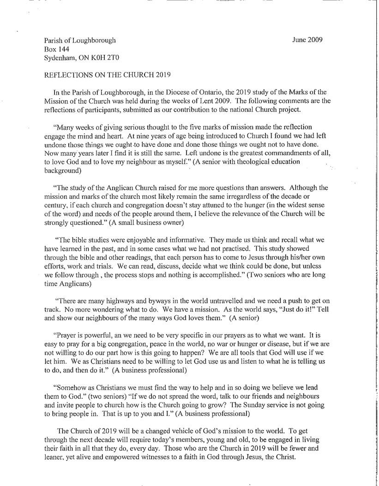

{kind=link}
Parish of Loughborough, Sydenham ON
Note: This page has been archived for historical interest, and is no longer being updated—information may be out-of-date. If you have any questions on this content, please contact the Anglican Church of Canada webteam.
| ANGLICAN APPEAL | FAQs | STAFF DIRECTORY | SITE MAP | SITES | SEARCH |


Review responses from other Canadian Anglicans below (most recent responses are at the top). You can also view responses by diocese, and add your own story.
Parish of Loughborough, Sydenham ON
The Parish of Bay de Verde, Newfoundland and Labrador
Our parish right now is attempting to live out it’s Mission Statement which includes “living out the Christian faith in the Anglican Tradition, under the guidance of the Holy Spirit …. and fostering the values of the Christian faith in our parish and reaching out to the wider community.” We are attempting to be good stewards of our resources and to plan for a sustainable and exciting future in the community. My vision for the wider church, most especially the church at the national level, is that we will become much more democratic and less hierarchical, less preoccupied with internal issues and more visionary with regard to world and society , a leader in the struggle for full human and civil rights for all, including full inclusion of gay and lesbian people, and others currently marginalized in the church.
Through all the changing scenes of life,
In trouble and in joy,
The praises of my God shall still
My heart and tongue employ.
As I acknowledge the passage of the 48th anniversary of ordination as a Deacon, and the approach of the same length of service as a priest, I am glad to see that old Tate & Brady rendering of Psalm 34 included in “Common Praise”. In my current exciting appointment as Interim at Trinity Memorial Church in Notre Dame de Graces, Diocese of Montreal, I rejoice to serve a community whose hearts and tongues praise God in a wide range of styles and constantly inspiring devotion. We are with some fear and trepidation engaged in a redevelopment project that will convert this vast edifice, created as a Memorial to those who served in the Great War 1914-1918 into a multi-service centre that will include a famous Montreal library, two church communities and a range of outreach ministries to the broader community. By the Vision date of 2019, by God’s grace a second project, the restoration of the exterior “skin” of this monumental structure on busy Sherbrooke Street, assisted by grants from the Quebec Religious Heritage Foundation, will also be complete, and the congregation’s many gifts and talents will be freed for Mission. Encouraged by a Lenten Study of the 5 Marks of Mission, the leadership of this congregation, of which the majority is of Caribbean origin, would endorse all five but emphasize the need to reach out to the surrounding community and respond to its human need with loving service. Proclamation of Good News, teaching and nurture of new believers we take as givens to our identity in Christ.
For my own part I recognize that I will not be part Trinity’s ongoing journey. My six-month term that began in 2007 has long since expired, and a prayerful Search Committee has begun work on the Parish Profile. I pray with the community that somewhere there is a priest who feels called to the challenge of developing fresh expressions of ministry in a diverse community setting, especially towards the Francophone majority surrounding us, supervising a major reconstruction project, raising significant amounts of funding, teaching good stewardship, and as pastor celebrating among, inspiring and caring for the flock, helping them realize the dreams God is calling them to dream.
Having enjoyed the privilege of service in three Dioceses, all in Eastern Canada, my vision for what little I know of the National Church would be liberation of every congregation from “one size fits all” conformity and in many cases badly sited and costly buildings, so that communities can respond with creativity and compassion to the Mission opportunities presented by their individual contexts.
When full retirement does become my state, I would envision by 2019 being in my ninth decade of life, a member of an ecumenical, bilingual faith community in the beautiful Laurentian town where my wife and I live. I would hope on occasion to find a place to sing old hymns, hear some classic Anthems, and enjoy exalted liturgy (but please God neither in 16th Century language nor always in Gothic monuments). The main Mark of Mission for us then will undoubtedly be the safeguarding of creation and the renewal of the life of this magnificent, beautiful corner of God’s good earth.
he Rev. Canon David W. Sinclair
Retired priest of the Diocese of Ontario, onetime priest in the Diocese of Niagara, now in Interim Ministry in the Diocese of Montreal.
Right now I see the Anglican Church starting to come into its own. We’re really starting to “get it” where it comes to reaching out to young people. As dire as the need is for spreading the Gospel abroad, the need at our own doorsteps is just as great. So many children (especially those in good families) don’t hear the Gospel in any way, shape or form, so it’s important for the focus of our mission to be balanced between local and global.
Our baby boomers, who make up the majority of the population are going to be quite elderly by then and our young people desperately need reassurance of a loving God and eternal life in Christ, so I think by 2019 our main message should definitely be one of hope for something tangible that we can picture and understand.
Where is my church of St. Paul’s Fort Garry right now?
A number of months ago, while administering the host for the first time (having administered wine frequently before) a young mother asked me for a blessing for her son – my initial inner response was, “I can’t do that – I’m not qualified” – whatever that might mean….fortunately that only lasted a nanosecond, because of course I would give her son a blessing – she had asked; who was I to withhold? After all, the blessing was God’s to give albeit through me at that point. The feeling I had after that event was that I was the one who had received the blessing – what a gift to be seen as having God within me!
At St. Paul’s all are welcome, and encouraged to receive the feast. It is evident that our youngest members feel a very real part of the feast. At a recent service a 2 ½ year old boy, who was up with his mother singing, ran back to the rest of his family loudly calling “It’s bread time” and then gathered a young friend to be first in line. Yes, it is unlikely this young boy has any theological concept of what “bread time” is, but he has a very real sense of belonging and celebration. Read the rest of this entry »
© 1998-2010 the General Synod of the Anglican Church of Canada The Anglican Church of Canada |
|
{kind=link}
{kind=link}
{kind=link}